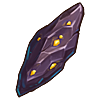

Получено: файл; исходный URL. Исходный файл без перекодирования; при замене домена идентичность оригиналу не проверена, авторство не установлено. Страница: источник.

Скала
браузерная Зомби Ферма / Зомби Мания; платформу и дату редакции уточнить- Тип
- Материал
- Покупка
- нет данных
- Продажа
- нет данных
- Как получить
- нет данных
- Применение
- нет данных
- Особенности
- нет данных
- Версия и дата
- браузерная Зомби Ферма / Зомби Мания; платформу и дату редакции уточнить
Данные по источнику · браузерная Зомби Ферма / Зомби Мания; платформа не указана · дата URL — дата размещения, редакция могла изменяться
Предварительно: Прочитана отдельная статья. Значки без текстовых подписей и количества могут быть не извлечены; требуется проверка версии и дата редакции. Связь с ЗомбиСити возможна.. Требуется сверка.
- Текст основного блока статьи
- Материал Скала Цена продажи: 900 Скала - материал игры Зомби Ферма, появившийся в игре 11.10.2016. Скалу можно получить, вырубая камни в Роще Калипсо. Материал Скала можно добыть на острове: Пиратская бухта Роща Калипсо Спутник Гиас Ипсилон Андромеды Скала есть в сундуках за зб на острове: Роща Калипсо Скала является ингредиентом рецепта: 1 Тяжелый металл 5 Скала 10 Металл Повара Скала попадается при колдовании Палочками на вещи дома: Палочка-выручалочка Риф Дерево Гриб Пальма Мозги Саперный слоник Скала участвует в строительстве: Звездная станция Скала может выпасть из сокровища: Успех Горшочек Горшочек с золотом Сундук
Связанные сущности
нет проверенных связей — требуется сверка.